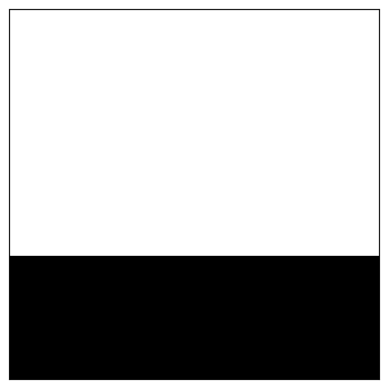
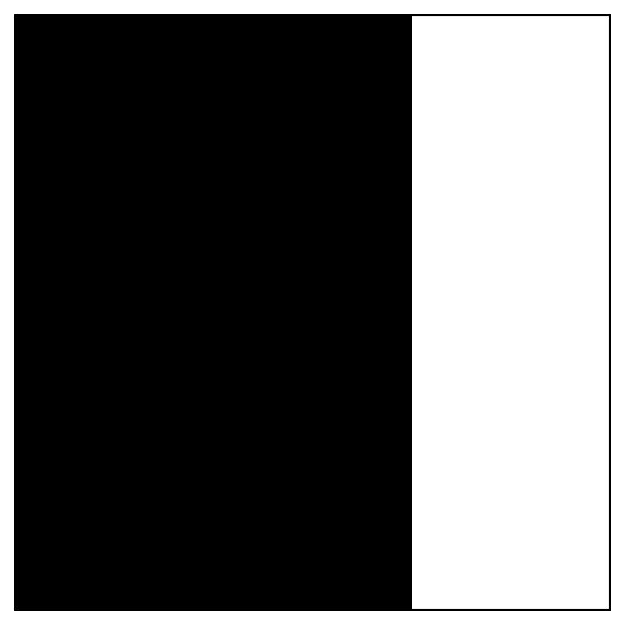
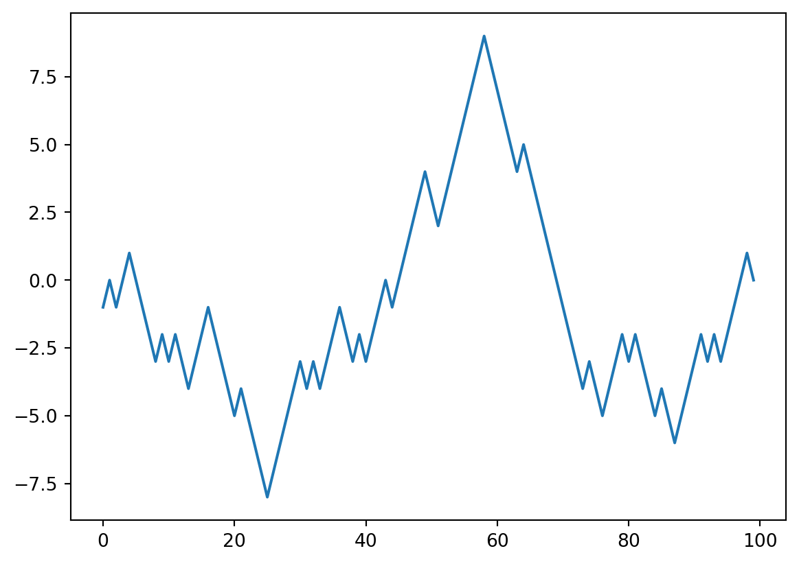

import numpy as np
my_arr = np.arange(1_000_000) # NumPy array
my_list = list(range(1_000_000)) # Python listPython for Data Analysis
Chapter 4 NumPy Basics: Arrays and Vectorized Computation
Introduction to NumPy
NumPy, short for Numerical Python, is a foundational package for numerical computing in Python.
Why is it important? üßê Many scientific computing packages rely on NumPy‚Äôs array objects for data exchange. Think of it as the lingua franca (common language) of data analysis in Python.
It is designed for efficiency on large arrays of data.
What will we learn? We’ll cover the basics, focusing on how NumPy enables fast, array-oriented operations, which are crucial for data analysis with libraries like pandas.
Key Features of NumPy
Here’s a glimpse of what NumPy offers:
- ndarray: The heart of NumPy. A highly efficient multidimensional array. Imagine a container holding data of the same type (e.g., all numbers). It allows for fast operations and broadcasting (we’ll cover this later!).
- Mathematical Functions: A rich set of functions that operate on entire arrays without explicit loops. This is called vectorization, and it’s much faster than writing loops in Python.
- Data I/O: Tools to read and write array data to disk.
- Linear Algebra: Capabilities for linear algebra, random number generation, and Fourier transforms. Essential tools for many scientific and engineering tasks.
- C API: Allows seamless integration with libraries written in C, C++, or FORTRAN. This is key for leveraging high-performance legacy code.
Why NumPy is Efficient?
NumPy’s efficiency stems from several design choices:
Contiguous Memory: Unlike Python lists, NumPy arrays store data in a single, contiguous block of memory. This makes accessing and manipulating data much faster.
C-Based Algorithms: Many NumPy operations are implemented in C, avoiding the overhead of Python’s interpreter.
Less Memory Usage: NumPy arrays generally consume less memory than Python lists, especially for numerical data.
NumPy vs. Python Lists: A Performance Showdown üèÉ‚Äç‚ôÇÔ∏è
Let’s see NumPy’s speed advantage in action. We’ll compare multiplying a million integers by 2 using both a NumPy array and a Python list:
NumPy vs. Python Lists: Timing the Operations
Now, the timed operations:
NumPy array operation:
#| echo: true
# %timeit my_arr2 = my_arr * 2NumPy vs. Python Lists: Timing (Continued)
Python list operation (using a list comprehension):
#| echo: true
# %timeit my_list2 = [x * 2 for x in my_list]NumPy-based algorithms are generally 10 to 100 times faster (or more) than their pure Python counterparts and use significantly less memory.
The NumPy ndarray: A Closer Look
The ndarray (N-dimensional array) is the core data structure in NumPy.
Homogeneous Data: All elements in an ndarray must be of the same data type (e.g., all integers, all floats).
Key Attributes:
shape: A tuple indicating the size of each dimension. For a 2x3 array, the shape would be(2, 3).dtype: An object describing the data type of the elements (e.g.,int64,float32).
Creating ndarray: The easiest way to create an array is to use the
arrayfunction. It accepts any sequence-like object (including other arrays) and produces a new NumPy array.
Creating ndarrays: Examples (From a list)
Let’s create some arrays:
import numpy as np
# From a list
data1 = [6, 7.5, 8, 0, 1]
arr1 = np.array(data1)
print(arr1)
print(arr1.dtype)[6. 7.5 8. 0. 1. ]
float64Creating ndarrays: Examples (From a nested list)
# From a nested list (creates a 2D array)
data2 = [[1, 2, 3, 4], [5, 6, 7, 8]]
arr2 = np.array(data2)
print(arr2)
print(arr2.ndim) # Number of dimensions
print(arr2.shape)
print(arr2.dtype)[[1 2 3 4]
[5 6 7 8]]
2
(2, 4)
int64Array Creation Functions: Zeros
NumPy provides several convenient functions to create arrays:
# Array of zeros
import numpy as np
zeros_arr = np.zeros(10) # 1D array
print(zeros_arr)
zeros_arr_2d = np.zeros((3, 6)) # 2D array (3x6)
print(zeros_arr_2d)[0. 0. 0. 0. 0. 0. 0. 0. 0. 0.]
[[0. 0. 0. 0. 0. 0.]
[0. 0. 0. 0. 0. 0.]
[0. 0. 0. 0. 0. 0.]]Array Creation Functions: Ones and Empty
# Array of ones
ones_arr = np.ones((2, 3)) # 2D array (2x3)
print(ones_arr)[[1. 1. 1.]
[1. 1. 1.]]# Uninitialized array (may contain garbage values)
empty_arr = np.empty((2, 3, 2)) # 3D array
print(empty_arr)[[[7.82323306e-319 0.00000000e+000]
[3.20442954e-315 6.91466482e-310]
[6.91463277e-310 6.91463277e-310]]
[[6.91463277e-310 6.91463277e-310]
[6.91463277e-310 4.79243676e-322]
[6.91466482e-310 6.91466482e-310]]]Array Creation Functions: Arange
# 'arange': Similar to Python's 'range', but returns an ndarray
range_arr = np.arange(15)
print(range_arr)[ 0 1 2 3 4 5 6 7 8 9 10 11 12 13 14]Summary of Array Creation Functions
A handy table summarizing common array creation functions:
| Function | Description |
|---|---|
array |
Converts input data (list, tuple, array, etc.) to an ndarray. |
asarray |
Similar to array, but does not copy if the input is already an ndarray. |
arange |
Like Python’s range, but returns an ndarray. |
Summary of Array Creation Functions (Continued)
| Function | Description |
|---|---|
ones, ones_like |
Creates an array filled with 1s. ones_like takes another array and creates a ones array of the same shape and dtype. |
zeros, zeros_like |
Similar to ones and ones_like, but creates arrays filled with 0s. |
empty, empty_like |
Creates an array without initializing its values. Use with caution! |
Summary of Array Creation Functions (Continued)
| Function | Description |
|---|---|
full, full_like |
Creates an array filled with a specified value. full_like takes another array and uses its shape and dtype. |
eye, identity |
Creates a square identity matrix (1s on the diagonal, 0s elsewhere). |
Data Types (dtypes)
What is a dtype? A special object that contains information about the data type held by an ndarray (e.g.,
float64,int32,bool).Why are dtypes important? They give you fine-grained control over how data is stored in memory. This is crucial for performance, especially with large datasets. They also allow NumPy to interface with data.
Data Types: Specifying dtypes
Specifying dtypes:
import numpy as np
arr1 = np.array([1, 2, 3], dtype=np.float64) # Explicitly set dtype
arr2 = np.array([1, 2, 3], dtype=np.int32)
print(arr1.dtype)
print(arr2.dtype)float64
int32Common NumPy Data Types
| Type | Type Code | Description |
|---|---|---|
int8, uint8 |
i1, u1 |
Signed and unsigned 8-bit (1 byte) integer types |
int16, uint16 |
i2, u2 |
Signed and unsigned 16-bit integer types |
int32, uint32 |
i4, u4 |
Signed and unsigned 32-bit integer types |
int64, uint64 |
i8, u8 |
Signed and unsigned 64-bit integer types |
Common NumPy Data Types (Continued)
| Type | Type Code | Description |
|---|---|---|
float16 |
f2 |
Half-precision floating point |
float32 |
f4 or f |
Standard single-precision floating point; compatible with C float |
float64 |
f8 or d |
Standard double-precision floating point; compatible with C double and Python float |
float128 |
f16 or g |
Extended-precision floating point |
Common NumPy Data Types (Continued)
| Type | Type Code | Description |
|---|---|---|
complex64, complex128, complex256 |
c8, c16, c32 |
Complex numbers represented by two 32, 64, or 128 floats, respectively |
bool |
? |
Boolean type storing True and False values |
object |
O |
Python object type; a value can be any Python object |
string_ |
S |
Fixed-length ASCII string type (1 byte per character). Use S10 for a string of length 10. |
unicode_ |
U |
Fixed-length Unicode type (number of bytes platform-specific) |
There are both signed and unsigned integer types. A signed integer can represent both positive and negative integers, while an unsigned integer can only represent non-zero integers.
Casting with astype: Integer to Float
What is casting? Converting an array from one dtype to another.
How to cast: Use the
astypemethod.astypealways creates a new array (a copy of the data), even if the new dtype is the same as the old dtype.
import numpy as np
arr = np.array([1, 2, 3, 4, 5])
print(arr.dtype)
float_arr = arr.astype(np.float64) # Integer to float
print(float_arr.dtype)int64
float64Casting with astype: String to Float
# `np.string_` was removed in the NumPy 2.0 release. Use `np.bytes_` instead.
numeric_strings = np.array(['1.25', '-9.6', '42'], dtype=np.bytes_)
float_arr = numeric_strings.astype(float) # String to float
print(float_arr)[ 1.25 -9.6 42. ]Be cautious when using the numpy.string_ type, as string data in NumPy is fixed size and may truncate input without warning.
Arithmetic with NumPy Arrays: Vectorization
Vectorization: A core concept in NumPy. It means performing operations on entire arrays without writing explicit
forloops. This is much faster and more concise.Element-wise Operations: Arithmetic operations between equal-sized arrays are applied element-wise:
arr = np.array([[1., 2., 3.], [4., 5., 6.]])
print(arr * arr) # Element-wise multiplication
print(arr - arr) # Element-wise subtraction[[ 1. 4. 9.]
[16. 25. 36.]]
[[0. 0. 0.]
[0. 0. 0.]]Arithmetic with NumPy Arrays: Operations with Scalars
- Operations with Scalars: Arithmetic operations with scalars propagate the scalar value to each element in the array:
print(1 / arr) # Divide each element by 1
print(arr ** 2) # Square each element[[1. 0.5 0.33333333]
[0.25 0.2 0.16666667]]
[[ 1. 4. 9.]
[16. 25. 36.]]Broadcasting (Brief Introduction)
What is broadcasting? A powerful mechanism that allows NumPy to perform arithmetic operations on arrays of different shapes, under certain conditions.
Example: You can add a scalar to an array of any shape. The scalar is effectively “stretched” to match the array’s shape.
We’ll cover broadcasting in more detail later. For now, just be aware that it exists.
Basic Indexing and Slicing
- Similar to Python Lists: One-dimensional NumPy arrays can be indexed and sliced much like Python lists:
import numpy as np
arr = np.arange(10)
print(arr[5]) # Access element at index 5
print(arr[5:8]) # Slice elements from index 5 up to (but not including) 8
arr[5:8] = 12 # Assign a value to a slice
print(arr)5
[5 6 7]
[ 0 1 2 3 4 12 12 12 8 9]Basic Indexing and Slicing: Views vs. Copies
- Views vs. Copies: Array slices are views on the original array. This means that modifying a slice will modify the original array. This is different from Python lists.
arr_slice = arr[5:8]
arr_slice[1] = 12345 # Modify the slice
print(arr) # Original array is also modified![ 0 1 2 3 4 12 12345 12 8 9]If you want a copy of a slice of an ndarray instead of a view, you will need to explicitly copy the array—for example, arr[5:8].copy().
Indexing and Slicing: Higher Dimensions (Two-Dimensional Arrays)
- Two-Dimensional Arrays: You can access elements using comma-separated indices:
arr2d = np.array([[1, 2, 3], [4, 5, 6], [7, 8, 9]])
print(arr2d[2]) # Access the third row (index 2)
print(arr2d[0][2]) # Access element at row 0, column 2 (two ways)
print(arr2d[0, 2]) # Access element at row 0, column 2[7 8 9]
3
3Indexing and Slicing: Higher Dimensions (Axes)
- Thinking about Axes:
- Axis 0: Rows
- Axis 1: Columns
Indexing elements in a NumPy array.
graph LR
subgraph "Axis 0 (Rows)"
0 --> 1
1 --> 2
end
subgraph "Axis 1 (Columns)"
0 --> 0[0,0]
0 --> 1[0,1]
0 --> 2[0,2]
1 --> 3[1,0]
1 --> 4[1,1]
1 --> 5[1,2]
2 --> 6[2,0]
2 --> 7[2,1]
2 --> 8[2,2]
end
Indexing and Slicing: Higher Dimensions (Slicing in Multiple Dimensions)
- Slicing in Multiple Dimensions:
print(arr2d[:2]) # Select the first two rows
print(arr2d[:2, 1:]) # Select first two rows, columns from index 1 onwards[[1 2 3]
[4 5 6]]
[[2 3]
[5 6]]Indexing and Slicing: Higher Dimensions (Mixing Integer Indexing and Slicing)
- Mixing Integer Indexing and Slicing:
print(arr2d[1, :2]) # Select second row, first two columns (lower dimensional slice)
print(arr2d[:2, 2]) # Select first two rows, third column[4 5]
[3 6]Indexing and Slicing: Higher Dimensions (Colon for Entire Axis)
- Colon for Entire Axis:
print(arr2d[:, :1]) # Select all rows, but only the first column[[1]
[4]
[7]]Two-dimensional array slicing: arr[:2,1:]
| Expression | Shape |
|---|---|
arr[:2,1:] |
(2,2) |

Two-dimensional array slicing: arr[2]
| Expression | Shape |
|---|---|
arr[2] |
(3,) |

Two-dimensional array slicing: arr[2,:]
| Expression | Shape |
|---|---|
arr[2,:] |
(3,) |

Two-dimensional array slicing: arr[2:,:]
| Expression | Shape |
|---|---|
arr[2:,:] |
(1,3) |

Two-dimensional array slicing: arr[:, :2]
| Expression | Shape |
|---|---|
arr[:, :2] |
(3,2) |

Two-dimensional array slicing: arr[1, :2]
| Expression | Shape |
|---|---|
arr[1, :2] |
(2,) |

Two-dimensional array slicing: arr[1:2, :2]
| Expression | Shape |
|---|---|
arr[1:2, :2] |
(1,2) |

Boolean Indexing: Creating a Boolean Array
- Concept: Select data based on a Boolean array. The Boolean array typically has the same shape as the array you’re indexing.
import numpy as np
names = np.array(['Bob', 'Joe', 'Will', 'Bob', 'Will', 'Joe', 'Joe'])
data = np.array([[4, 7], [0, 2], [-5, 6], [0, 0], [1, 2],
[-12, -4], [3, 4]])
print(names == 'Bob') # Create a Boolean array[ True False False True False False False]Boolean Indexing: Selecting Rows
print(data[names == 'Bob']) # Select rows where names == 'Bob'[[4 7]
[0 0]]Boolean Indexing: Combining with Slicing/Indexing
print(data[names == 'Bob', 1:]) # Select rows where names == 'Bob', and columns from index 1
print(data[names != 'Bob']) # Select rows where names is NOT 'Bob'[[7]
[0]]
[[ 0 2]
[ -5 6]
[ 1 2]
[-12 -4]
[ 3 4]]Boolean Indexing: Logical Operators
- Logical Operators:
~: Negates a Boolean array (likenot)&: Combines conditions (likeand)|: Combines conditions (likeor)
mask = (names == 'Bob') | (names == 'Will')
print(data[mask])[[ 4 7]
[-5 6]
[ 0 0]
[ 1 2]]The Python keywords and and or do not work with Boolean arrays. Use & (and) and | (or) instead.
Fancy Indexing: Selecting Specific Rows
- Concept: Indexing using integer arrays. Allows you to select specific rows or columns, and even reorder them.
import numpy as np
arr = np.zeros((8, 4))
for i in range(8):
arr[i] = i
print(arr)
print(arr[[4, 3, 0, 6]]) # Select rows 4, 3, 0, and 6, in that order[[0. 0. 0. 0.]
[1. 1. 1. 1.]
[2. 2. 2. 2.]
[3. 3. 3. 3.]
[4. 4. 4. 4.]
[5. 5. 5. 5.]
[6. 6. 6. 6.]
[7. 7. 7. 7.]]
[[4. 4. 4. 4.]
[3. 3. 3. 3.]
[0. 0. 0. 0.]
[6. 6. 6. 6.]]Fancy Indexing: Selecting Specific Elements
arr = np.arange(32).reshape((8, 4))
print(arr[[1, 5, 7, 2], [0, 3, 1, 2]]) # Select elements (1, 0), (5, 3), (7, 1), (2, 2)[ 4 23 29 10]Fancy Indexing: Selecting a Rectangular Region
print(arr[[1, 5, 7, 2]][:, [0, 3, 1, 2]]) # Select rows 1, 5, 7, 2, and reorder columns[[ 4 7 5 6]
[20 23 21 22]
[28 31 29 30]
[ 8 11 9 10]]- Important: Fancy indexing, unlike slicing, always copies the data into a new array.
Transposing Arrays and Swapping Axes
- Transposing: Rearranging data by switching rows and columns. Use the
.Tattribute or thetransposemethod.
arr = np.arange(15).reshape((3, 5))
print(arr)
print(arr.T) # Transpose the array[[ 0 1 2 3 4]
[ 5 6 7 8 9]
[10 11 12 13 14]]
[[ 0 5 10]
[ 1 6 11]
[ 2 7 12]
[ 3 8 13]
[ 4 9 14]]Transposing Arrays: Matrix Multiplication
- Matrix Multiplication: Use
np.dotor the@operator for matrix multiplication.
arr = np.array([[0, 1, 0], [1, 2, -2], [6, 3, 2], [-1, 0, -1], [1, 0, 1]])
print(np.dot(arr.T, arr)) # Matrix multiplication
print(arr.T @ arr) # Matrix multiplication using the @ operator[[39 20 12]
[20 14 2]
[12 2 10]]
[[39 20 12]
[20 14 2]
[12 2 10]]Transposing Arrays: Swapping Axes
- Swapping Axes: The
swapaxesmethod takes a pair of axis numbers and switches the indicated axes.
print(arr.swapaxes(0, 1))[[ 0 1 6 -1 1]
[ 1 2 3 0 0]
[ 0 -2 2 -1 1]]Transposing and swapaxes return views on the underlying data without making a copy.
Pseudorandom Number Generation
numpy.randomModule: Provides functions to generate arrays of random numbers.default_rng: The recommended way to create a random number generator.
import numpy as np
rng = np.random.default_rng(seed=12345) # Create a generator with a seed
data = rng.standard_normal((2, 3)) # Generate a 2x3 array of standard normal values
print(data)[[-1.42382504 1.26372846 -0.87066174]
[-0.25917323 -0.07534331 -0.74088465]]Pseudorandom Number Generation (Continued)
Why use a seed? Setting a seed ensures reproducibility. You’ll get the same random numbers each time.
Generator Isolation: The generator object
rngis isolated from other code that might also use thenumpy.randommodule.Performance:
numpy.randomis much faster than Python’s built-inrandommodule for generating large arrays.
Common numpy.random Functions
| Method | Description |
|---|---|
permutation |
Returns a random permutation of a sequence, or a permuted range. |
shuffle |
Randomly permutes a sequence in place. |
uniform |
Draws samples from a uniform distribution. |
Common numpy.random Functions (Continued)
| Method | Description |
|---|---|
integers |
Draws random integers from a given low-to-high range. |
standard_normal |
Draws samples from a standard normal distribution (mean 0, standard deviation 1). |
binomial |
Draws samples from a binomial distribution. |
Common numpy.random Functions (Continued)
| Method | Description |
|---|---|
normal |
Draws samples from a normal (Gaussian) distribution. |
beta |
Draws samples from a Beta distribution. |
chisquare |
Draws samples from a chi-square distribution. |
gamma |
Draws samples from a gamma distribution. |
uniform |
Draws samples from a uniform [0, 1) distribution. |
Universal Functions (ufuncs)
What are ufuncs? Functions that perform element-wise operations on ndarrays. They are fast vectorized wrappers for simple functions.
Unary ufuncs: Take a single array as input.
import numpy as np
arr = np.arange(10)
print(np.sqrt(arr)) # Square root of each element
print(np.exp(arr)) # Exponential of each element[0. 1. 1.41421356 1.73205081 2. 2.23606798
2.44948974 2.64575131 2.82842712 3. ]
[1.00000000e+00 2.71828183e+00 7.38905610e+00 2.00855369e+01
5.45981500e+01 1.48413159e+02 4.03428793e+02 1.09663316e+03
2.98095799e+03 8.10308393e+03]Universal Functions (ufuncs): Binary and those return multiple arrays
- Binary ufuncs: Take two arrays as input.
rng = np.random.default_rng(seed=12345)
x = rng.standard_normal(8)
y = rng.standard_normal(8)
print(np.maximum(x, y)) # Element-wise maximum[ 0.36105811 1.26372846 2.34740965 0.96849691 -0.07534331 0.90219827
-0.46695317 0.6488928 ]- ufuncs that return multiple arrays:
arr = rng.standard_normal(7) * 5
remainder, whole_part = np.modf(arr) # Returns fractional and integral parts
print(remainder)
print(whole_part)[ 0.94422172 -0.28334067 0.87928757 0.99489497 0.6114903 -0.49849258
0.51459671]
[ 3. -6. 2. 6. 6. -1. 4.]Some Unary Universal Functions
| Function | Description |
|---|---|
abs, fabs |
Computes the absolute value element-wise. fabs is faster for non-complex data. |
sqrt |
Computes the square root of each element (equivalent to arr ** 0.5). |
square |
Computes the square of each element (equivalent to arr ** 2). |
exp |
Computes the exponent ex of each element. |
Some Unary Universal Functions (Continued)
| Function | Description |
|---|---|
log, log10, log2, log1p |
Natural logarithm (base e), log base 10, log base 2, and log(1 + x), respectively. |
sign |
Computes the sign of each element: 1 (positive), 0 (zero), or -1 (negative). |
ceil |
Computes the ceiling of each element (smallest integer greater than or equal to that number). |
floor |
Computes the floor of each element (largest integer less than or equal to each element). |
Some Unary Universal Functions (Continued)
| Function | Description |
|---|---|
rint |
Rounds elements to the nearest integer, preserving the dtype. |
modf |
Returns fractional and integral parts of array as separate arrays. |
isnan |
Returns a Boolean array indicating whether each value is NaN (Not a Number). |
isfinite, isinf |
Returns a Boolean array indicating whether each element is finite or infinite, respectively. |
Some Unary Universal Functions (Continued)
| Function | Description |
|---|---|
cos, cosh, sin, sinh, tan, tanh |
Regular and hyperbolic trigonometric functions. |
arccos, arccosh, arcsin, arcsinh, arctan, arctanh |
Inverse trigonometric functions. |
logical_not |
Computes the truth value of not x element-wise (equivalent to ~arr). |
Some Binary Universal Functions
| Function | Description |
|---|---|
add |
Adds corresponding elements in arrays. |
subtract |
Subtracts elements in second array from first array. |
multiply |
Multiplies array elements. |
divide, floor_divide |
Divides or floor divides (truncating the remainder). |
Some Binary Universal Functions (Continued)
| Function | Description |
|---|---|
power |
Raises elements in first array to powers indicated in second array. |
maximum, fmax |
Element-wise maximum. fmax ignores NaN. |
minimum, fmin |
Element-wise minimum. fmin ignores NaN. |
mod |
Element-wise modulus (remainder of division). |
Some Binary Universal Functions (Continued)
| Function | Description |
|---|---|
copysign |
Copies the sign of values in second argument to values in first argument. |
greater, greater_equal, less, less_equal, equal, not_equal |
Performs element-wise comparison, yielding a Boolean array. |
logical_and, logical_or, logical_xor |
Computes element-wise truth value of logical operations. |
Array-Oriented Programming: Example
Let’s compute the function √(x^2 + y^2) across a grid of values:
import numpy as np
points = np.arange(-5, 5, 0.01) # 1000 equally spaced points
xs, ys = np.meshgrid(points, points) # Create coordinate matrices
z = np.sqrt(xs ** 2 + ys ** 2) # Compute the functionArray-Oriented Programming: Visualization
Now, let’s visualize the result using Matplotlib:
import matplotlib.pyplot as plt
plt.imshow(z, cmap=plt.cm.gray, extent=[-5, 5, -5, 5])
plt.colorbar()
plt.title("Image plot of $\sqrt{x^2 + y^2}$ for a grid of values")
# plt.close('all')
plt.show()<>:4: SyntaxWarning: invalid escape sequence '\s'
<>:4: SyntaxWarning: invalid escape sequence '\s'
/tmp/ipykernel_3180/1319111413.py:4: SyntaxWarning: invalid escape sequence '\s'
plt.title("Image plot of $\sqrt{x^2 + y^2}$ for a grid of values")
This example demonstrates how concise and efficient array-oriented programming can be.
Expressing Conditional Logic: np.where
np.where: A vectorized version of the ternary expressionx if condition else y.
import numpy as np
xarr = np.array([1.1, 1.2, 1.3, 1.4, 1.5])
yarr = np.array([2.1, 2.2, 2.3, 2.4, 2.5])
cond = np.array([True, False, True, True, False])
result = np.where(cond, xarr, yarr) # Select from xarr if cond is True, otherwise yarr
print(result)[1.1 2.2 1.3 1.4 2.5]Expressing Conditional Logic: np.where (Example)
- Example: Replace positive values in an array with 2, and negative values with -2:
rng = np.random.default_rng(seed=12345)
arr = rng.standard_normal((4, 4))
result = np.where(arr > 0, 2, -2)
print(result)[[-2 2 -2 -2]
[-2 -2 -2 2]
[ 2 -2 2 2]
[-2 2 -2 -2]]Mathematical and Statistical Methods
NumPy provides a set of methods for computing statistics on arrays:
rng = np.random.default_rng(seed=12345)
arr = rng.standard_normal((5, 4))
print(arr.mean()) # Mean of all elements
print(np.mean(arr)) # Equivalent to arr.mean()
print(arr.sum()) # Sum of all elements0.0010611661248891013
0.0010611661248891013
0.021223322497782027Mathematical and Statistical Methods: Axis Argument
- Axis Argument: Many methods take an optional
axisargument to compute the statistic along a specific axis:
print(arr.mean(axis=1)) # Mean across columns (for each row)
print(arr.sum(axis=0)) # Sum down rows (for each column)[-0.32248289 -0.38378196 0.4310254 -0.0962079 0.37675318]
[-1.10865307 -1.78448912 0.21785956 2.69650595]Mathematical and Statistical Methods: cumsum and cumprod
cumsumandcumprod: Compute cumulative sums and products:
arr = np.array([0, 1, 2, 3, 4, 5, 6, 7])
print(arr.cumsum()) # Cumulative sum[ 0 1 3 6 10 15 21 28]Basic Array Statistical Methods
| Method | Description |
|---|---|
sum |
Sum of all the elements in the array or along an axis; zero-length arrays have sum 0. |
mean |
Arithmetic mean; invalid (returns NaN) on zero-length arrays. |
std, var |
Standard deviation and variance, respectively. |
Basic Array Statistical Methods (Continued)
| Method | Description |
|---|---|
min,max |
Minimum and maximum. |
argmin, argmax |
Indices of minimum and maximum elements, respectively. |
cumsum |
Cumulative sum of elements starting from 0. |
cumprod |
Cumulative product of elements starting from 1. |
Methods for Boolean Arrays: Sum with Booleans
sumwith Booleans:Truevalues are treated as 1,Falseas 0. Useful for countingTruevalues.
rng = np.random.default_rng(seed=12345)
arr = rng.standard_normal(100)
print((arr > 0).sum()) # Count positive values50Methods for Boolean Arrays: any and all
anyandall:any: Checks if at least one value in a Boolean array isTrue.all: Checks if all values in a Boolean array areTrue.
bools = np.array([False, False, True, False])
print(bools.any()) # Is there at least one True?
print(bools.all()) # Are all values True?True
FalseSorting: sort Method
sortMethod: Sorts an array in place.
rng = np.random.default_rng(seed=12345)
arr = rng.standard_normal(6)
arr.sort() # Sort the array in place
print(arr)[-1.42382504 -0.87066174 -0.74088465 -0.25917323 -0.07534331 1.26372846]Sorting: Sorting Along an Axis
rng = np.random.default_rng(seed=12345)
arr = rng.standard_normal((5, 3))
arr.sort(axis=0) # Sort within each column
print(arr)[[-1.95286306 -0.07534331 -0.87066174]
[-1.42382504 0.6488928 -0.74088465]
[-1.3677927 0.90219827 -0.46695317]
[-0.75938718 1.26372846 0.36105811]
[-0.25917323 2.34740965 0.96849691]]Sorting: Sorting Along an Axis (Continued)
arr.sort(axis=1) # Sort within each row
print(arr)[[-1.95286306 -0.87066174 -0.07534331]
[-1.42382504 -0.74088465 0.6488928 ]
[-1.3677927 -0.46695317 0.90219827]
[-0.75938718 0.36105811 1.26372846]
[-0.25917323 0.96849691 2.34740965]]np.sortFunction: Returns a sorted copy of an array (does not modify the original).
Unique and Other Set Logic: np.unique
np.unique: Returns the sorted unique values in an array.
import numpy as np
names = np.array(['Bob', 'Will', 'Joe', 'Bob', 'Will', 'Joe', 'Joe'])
print(np.unique(names)) # Get unique names['Bob' 'Joe' 'Will']Unique and Other Set Logic: np.in1d
np.in1d: Tests membership of values in one array within another.
values = np.array([6, 0, 0, 3, 2, 5, 6])
print(np.in1d(values, [2, 3, 6])) # Check if each value in 'values' is in [2, 3, 6][ True False False True True False True]/tmp/ipykernel_3180/1961777543.py:2: DeprecationWarning: `in1d` is deprecated. Use `np.isin` instead.
print(np.in1d(values, [2, 3, 6])) # Check if each value in 'values' is in [2, 3, 6]Array Set Operations
| Method | Description |
|---|---|
unique(x) |
Computes the sorted, unique elements in x. |
intersect1d(x, y) |
Computes the sorted, common elements in x and y. |
Array Set Operations (Continued)
| Method | Description |
|---|---|
union1d(x, y) |
Computes the sorted union of elements. |
in1d(x, y) |
Computes a Boolean array indicating whether each element of x is in y. |
Array Set Operations (Continued)
| Method | Description |
|---|---|
setdiff1d(x, y) |
Set difference: elements in x that are not in y. |
setxor1d(x, y) |
Set symmetric differences; elements that are in either of the arrays, but not both. |
File Input and Output with Arrays: np.save and np.load
np.saveandnp.load: Functions for saving and loading arrays in NumPy’s binary format (.npy).
import numpy as np
arr = np.arange(10)
np.save('some_array', arr) # Save to 'some_array.npy'
loaded_arr = np.load('some_array.npy') # Load from 'some_array.npy'
print(loaded_arr)[0 1 2 3 4 5 6 7 8 9]File Input and Output with Arrays: np.savez
np.savez: Saves multiple arrays into an uncompressed archive (.npz).
np.savez('array_archive.npz', a=arr, b=arr) # Save multiple arrays
arch = np.load('array_archive.npz') # Load the archive
print(arch['b']) # Access arrays by name[0 1 2 3 4 5 6 7 8 9]np.savez_compressed: Saves multiple arrays into a compressed archive.
Linear Algebra: Matrix Multiplication
numpy.linalgModule: Provides functions for linear algebra operations.Matrix Multiplication:
import numpy as np
x = np.array([[1., 2., 3.], [4., 5., 6.]])
y = np.array([[6., 23.], [-1, 7], [8, 9]])
print(x.dot(y)) # Matrix multiplication (method)
print(np.dot(x, y)) # Matrix multiplication (function)
print( x @ np.ones(3)) # Matrix multiplication using the @ operator[[ 28. 64.]
[ 67. 181.]]
[[ 28. 64.]
[ 67. 181.]]
[ 6. 15.]Linear Algebra: Inverse and Determinant
- Inverse and Determinant:
from numpy.linalg import inv, qr
rng = np.random.default_rng(seed=12345)
X = rng.standard_normal((5, 5))
mat = X.T @ X
print(inv(mat)) # Inverse of a matrix[[ 0.15548538 -0.36723081 -0.52638547 -0.2300642 -0.04646089]
[-0.36723081 2.54917814 3.47827334 1.48196722 0.22206454]
[-0.52638547 3.47827334 5.46389554 2.46214396 0.63467543]
[-0.2300642 1.48196722 2.46214396 1.38302896 0.33430132]
[-0.04646089 0.22206454 0.63467543 0.33430132 0.33879566]]Commonly Used numpy.linalg Functions
| Function | Description |
|---|---|
diag |
Returns the diagonal (or off-diagonal) elements of a square matrix as a 1D array, or converts a 1D array to a square matrix. |
dot |
Matrix multiplication. |
trace |
Computes the sum of the diagonal elements. |
Commonly Used numpy.linalg Functions (Continued)
| Function | Description |
|---|---|
det |
Computes the matrix determinant. |
eig |
Computes the eigenvalues and eigenvectors of a square matrix. |
inv |
Computes the inverse of a square matrix. |
Commonly Used numpy.linalg Functions (Continued)
| Function | Description |
|---|---|
pinv |
Computes the Moore-Penrose pseudoinverse of a matrix. |
qr |
Computes the QR decomposition. |
svd |
Computes the singular value decomposition (SVD). |
Commonly Used numpy.linalg Functions (Continued)
| Function | Description |
|---|---|
solve |
Solves the linear system Ax = b for x, where A is a square matrix. |
lstsq |
Computes the least-squares solution to Ax = b. |
Example: Random Walks
Let’s simulate a simple random walk using NumPy:
import numpy as np
nsteps = 1000
rng = np.random.default_rng(seed=12345)
draws = rng.integers(0, 2, size=nsteps) # Generate 0s and 1s (coin flips)
steps = np.where(draws == 0, 1, -1) # Convert to 1 and -1
walk = steps.cumsum() # Cumulative sum (the walk)Example: Random Walks (Visualization)
First 100 steps of a simple random walk:
import matplotlib.pyplot as plt
plt.plot(walk[:100])
plt.show()
Random Walks: Analysis
We can analyze the random walk:
print(walk.min()) # Minimum value
print(walk.max()) # Maximum value-8
50Random Walks: First Crossing Time
- First Crossing Time: The step at which the walk reaches a particular value.
print((np.abs(walk) >= 10).argmax()) # Find the first step where the absolute value is >= 10155Using argmax here is not always efficient because it always makes a full scan of the array. In this special case, once a True is observed we know it to be the maximum value.
Simulating Many Random Walks at Once
We can efficiently simulate many random walks simultaneously:
nwalks = 5000
nsteps = 1000
rng = np.random.default_rng(seed=12345)
draws = rng.integers(0, 2, size=(nwalks, nsteps)) # Generate draws for all walks
steps = np.where(draws > 0, 1, -1)
walks = steps.cumsum(axis=1) # Cumulative sum for each walkSimulating Many Random Walks: Average Crossing Time
Then, for example, calculate the average minimum crossing time:
hits30 = (np.abs(walks) >= 30).any(axis=1)
crossing_times = (np.abs(walks[hits30]) >= 30).argmax(axis=1)
print(crossing_times.mean())500.6182621502209This vectorized approach requires creating an array with nwalks * nsteps elements, which may use a large amount of memory for large simulations. If memory is more constrained, then a different approach will be required.
Summary
NumPy’s Power: NumPy provides a powerful foundation for numerical computing in Python, thanks to its efficient
ndarrayand vectorized operations.Key Concepts:
ndarray: Multidimensional array with homogeneous data.dtype: Data type of array elements.- Vectorization: Performing operations on entire arrays without loops.
- Broadcasting: Arithmetic operations on arrays of different shapes.
Summary (Continued)
- Key Concepts (Continued):
- Indexing and Slicing: Accessing and modifying array elements and subarrays.
- Fancy Indexing: Indexing with integer arrays.
- Transposing: Rearranging data.
- ufuncs: Fast element-wise functions.
numpy.random: Generating arrays of random numbers.- Linear Algebra
- Efficiency: NumPy is designed for performance, especially with large datasets.
Thoughts and Discussion ü§î
How does the concept of vectorization in NumPy compare to how you might perform similar operations in other programming languages you know?
Can you think of specific data analysis tasks where NumPy’s array-oriented approach would be significantly more efficient than using Python lists and loops?
What are the advantages and potential disadvantages of NumPy array slices being views rather than copies? When might you need to explicitly create a copy?
Thoughts and Discussion ü§î (Continued)
Consider the
np.wherefunction. How could you use it to implement more complex conditional logic than the simple examples we saw?Why is it important to understand NumPy’s data types (
dtypes)? How can they impact performance and memory usage?Discuss scenarios where you might use NumPy’s linear algebra functions (e.g.,
dot,inv,eig).